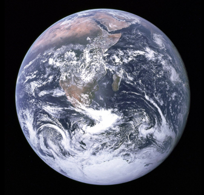
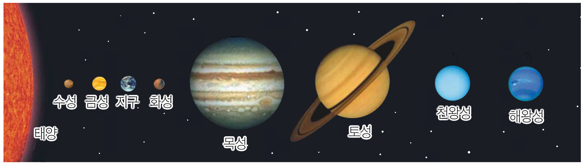
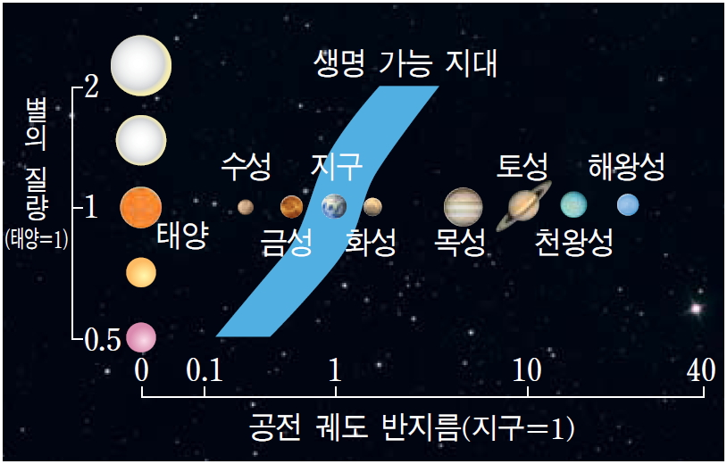
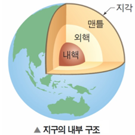

Introduce
> 지구

지구는 태양으로부터 세 번째 행성이며, 엷은 대기층으로 둘러싸여져 있다.
지금까지 발견된 지구형 행성 중에서는 가장 크다. 지구는 45억 6700만 년 전 형성 되었으며,
달을 위성으로 가지고 있다.
지구의 중력은 우주의 다른 물체, 태양과 지구의 유일한 자연 위성인 달과 상호작용을 한다.
태양에서 지구까지의 거리는 약 1억 5000만 킬로미터이다. 지구는 완전한 구가 아닌 타원형 모양을 가지고 있다. 적도는 반지름이 약 6378킬로미터, 극반지름은 약 6357킬로미터이다. 그 차가 약 20킬로미터이므로 편평도가 매우 낮다.
지구의 중력은 우주의 다른 물체, 태양과 지구의 유일한 자연 위성인 달과 상호작용을 한다.
태양에서 지구까지의 거리는 약 1억 5000만 킬로미터이다. 지구는 완전한 구가 아닌 타원형 모양을 가지고 있다. 적도는 반지름이 약 6378킬로미터, 극반지름은 약 6357킬로미터이다. 그 차가 약 20킬로미터이므로 편평도가 매우 낮다.

> 액체 상태의 물
지구의 표면에 약 70%는 물로 덮여 있고 우리 몸의 대부분을 구성한다.
물은 산소와 함께 생명체가 살아가기 위한 필수 요소로 꼽힌다.
지구는 물과 산소가 풍부해 다양한 생명체가 살고 있다.
지구에는 액체 상태의 물이 어떻게 존재할까?
지구는 태양으로부터 적당한 거리(1AU)만큼 떨어져 있어서 다른 행성들과는 다르게 액체 상태의 물이 존재할 수 있다.
지구에는 액체 상태의 물이 어떻게 존재할까?
지구는 태양으로부터 적당한 거리(1AU)만큼 떨어져 있어서 다른 행성들과는 다르게 액체 상태의 물이 존재할 수 있다.

> 지구의 구조

적도는 반지름이 약 6378Kkm, 극반지름은 약 6357km이다.
그 차가 약 20km이므로 편평도가 매우 낮다.
지구 내부 구조는 크게 4개의 층으로 구분한다. 지표로부터 지각, 맨틀, 외핵과 내핵으로 구성되어 있으며, 상부로는 대기권이 위치하고, 그 멀리까지는 지구 자기장이 분포한다.
지구 내부 구조는 크게 4개의 층으로 구분한다. 지표로부터 지각, 맨틀, 외핵과 내핵으로 구성되어 있으며, 상부로는 대기권이 위치하고, 그 멀리까지는 지구 자기장이 분포한다.
> 지구의 자전

> 지구의 하루가 길어진 이유
지난 14 년 동안의 지구와 달의 관계를 조사한 새로운 연구에 의하면 14억 년 전에는 지구의 자전 주기가 18시간밖에 되지 않았다는 점이다.
우리는 14억 년 동안 하루에 6시간을 더 얻었고, 하루의 길이는 매년 평균 0.00001542857초씩 늘어났다.
이렇게 하루가 더 길어진 이유는 달이 계속해서 조금씩 지구에서 멀어졌기 때문이다. 14억 년 전 달은 지구에 조금 더 가까웠고 지구의 회전은 더 빨랐다. 콘신 매디슨 대학의 지구과학자 스티븐 마이어스는 “팔을 멀리 뻗어서 회전속도를 줄이는 피겨스케이팅 선수와 같이, 달이 멀어지면서 지구의 회전 속도는 줄어들었다.”고 말했다.
이렇게 하루가 더 길어진 이유는 달이 계속해서 조금씩 지구에서 멀어졌기 때문이다. 14억 년 전 달은 지구에 조금 더 가까웠고 지구의 회전은 더 빨랐다. 콘신 매디슨 대학의 지구과학자 스티븐 마이어스는 “팔을 멀리 뻗어서 회전속도를 줄이는 피겨스케이팅 선수와 같이, 달이 멀어지면서 지구의 회전 속도는 줄어들었다.”고 말했다.